Dangerous Popsicles, 2014
Have you ever licked a cactus? Probably not. But it might be interesting to try it out, in another form.
Dangerous Popsicles are a collection of weird shaped popsicles inspired by cacti and life-threatening bacteria/viruses. What will happen when we put these dangerous things on one of our most sensitive organs, our tongues? Does pain really bring pleasure? Is there beauty in user-unfriendly things?
Dangerous Popsicles aims to create a unique, conflicting sensory experience. Before tasting with your tongue, you first taste with your eyes and mind. The popsicles are nothing but water and sugar, but ideas of deadly bacteria/viruses and the spikiness of cacti are enough to stimulate your senses, even before your first taste.
THE FAMILY
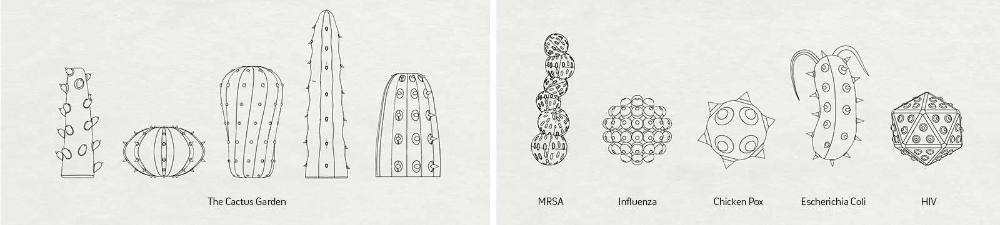
PROCESS
The shapes of the popsicles are first modeled and 3d-printed using Objet Connex 500 3D printer. The 3d-printed shapes are then used as originals to make silicone molds. These silicone molds, mostly two-part while a few four-part, are used to cast popsicles.
To learn more about the making process, visit here.
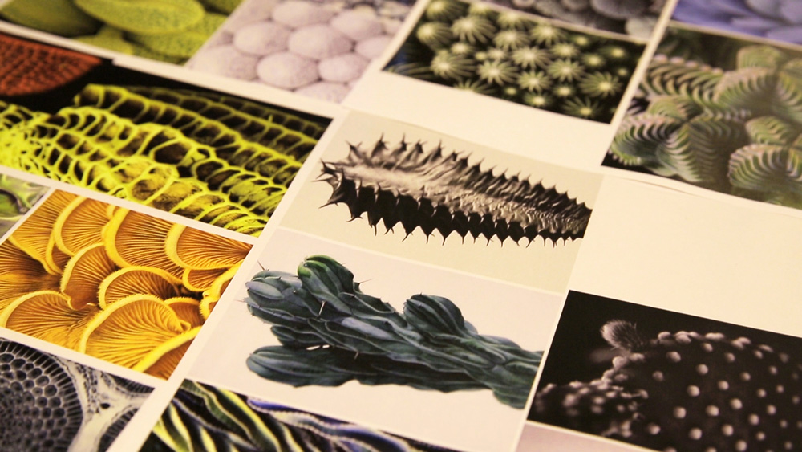
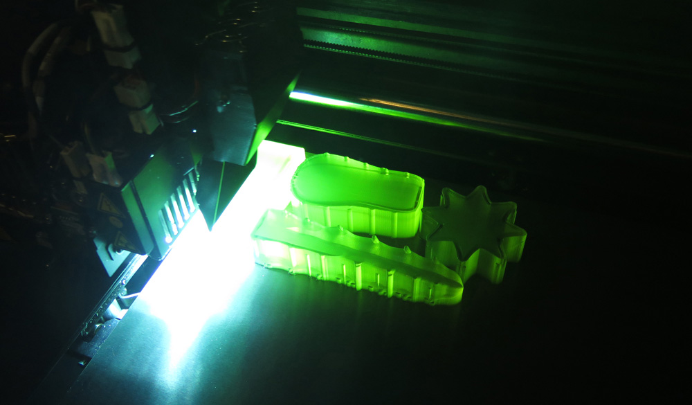
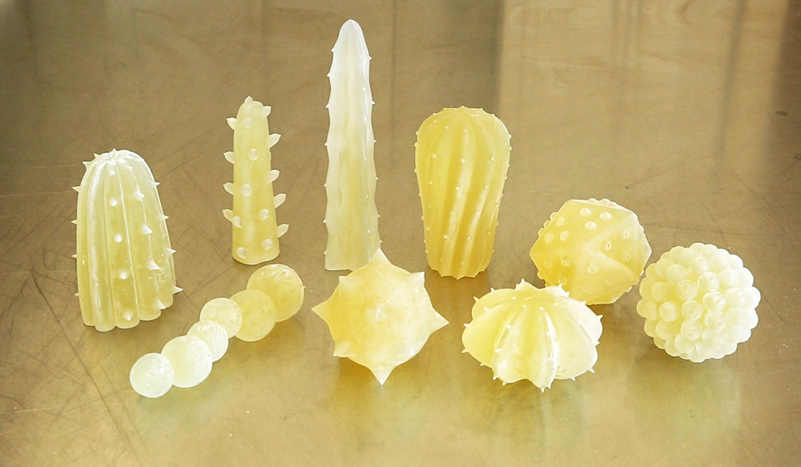
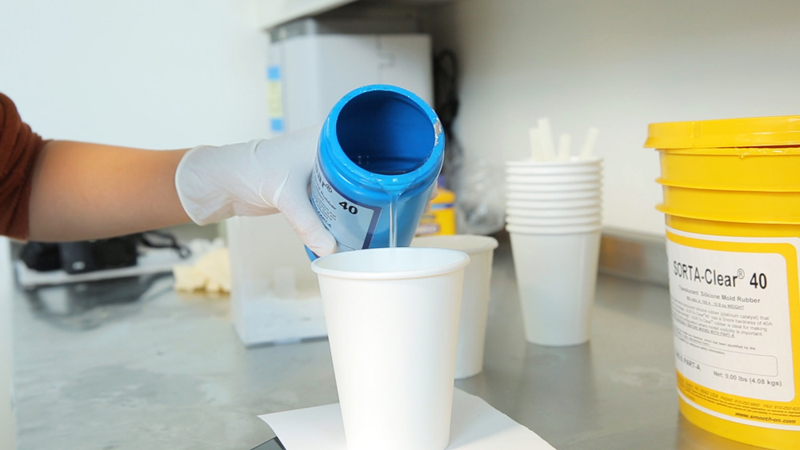
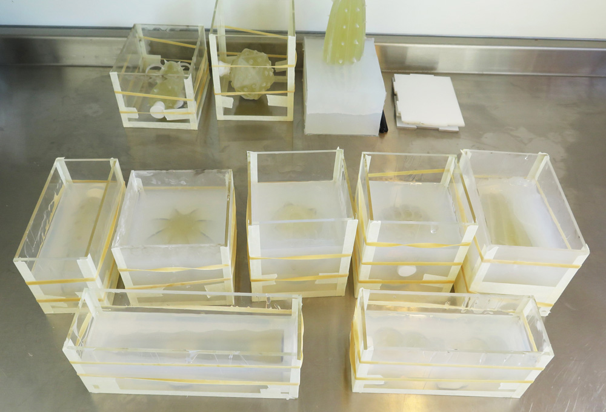
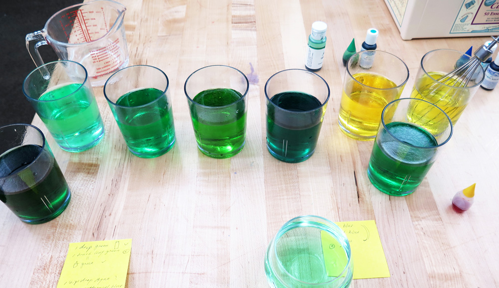
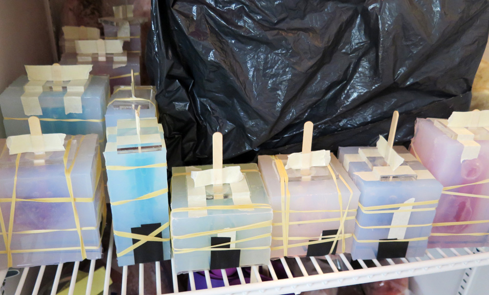
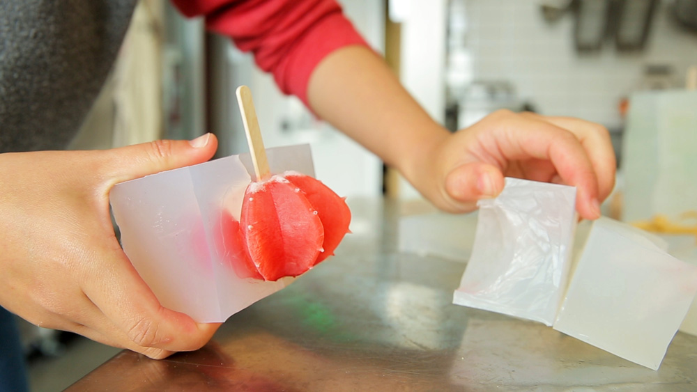

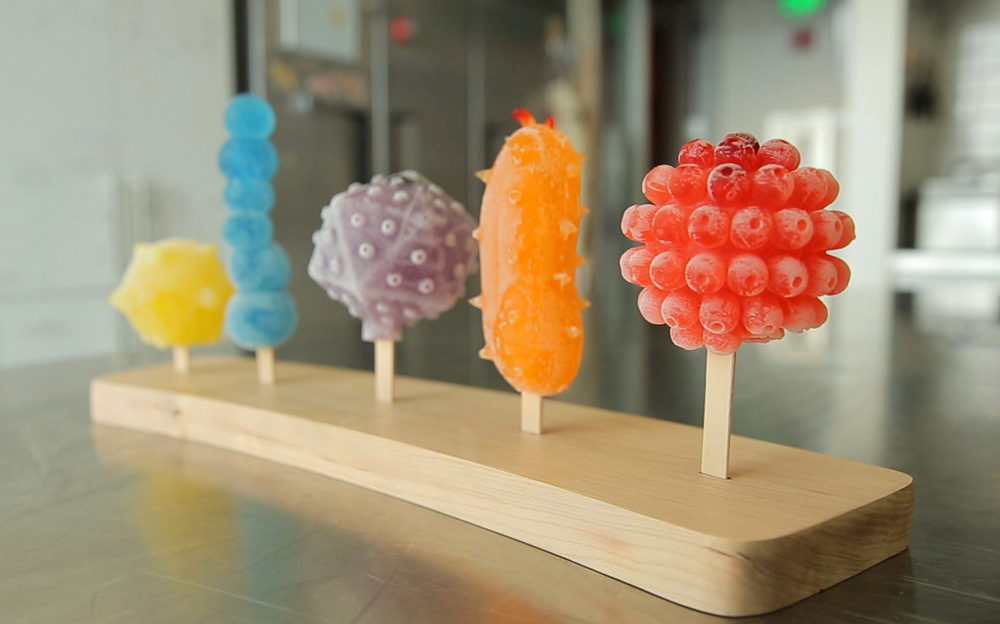
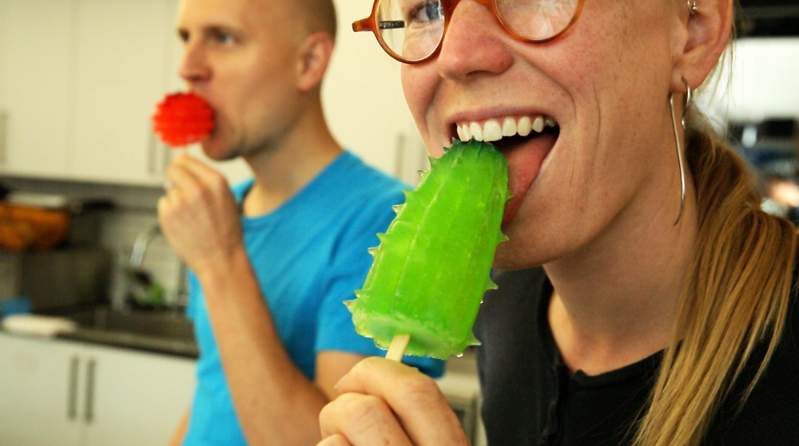